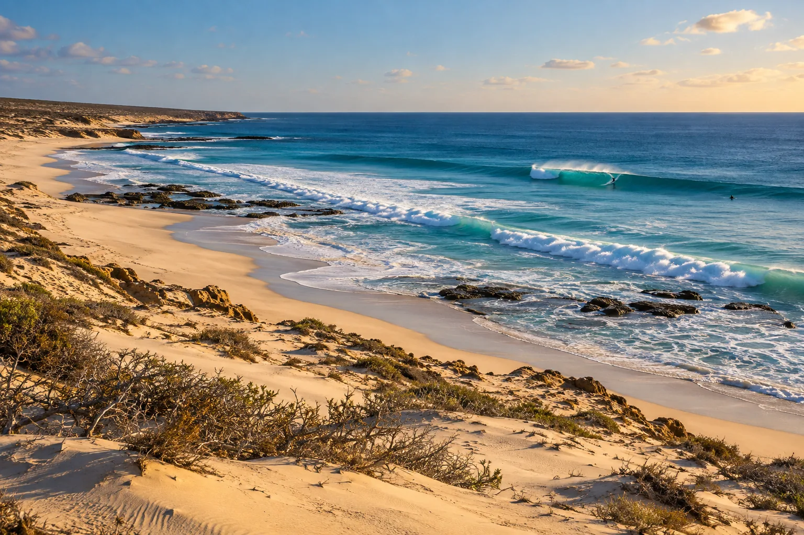

Lavanono
Sud, Madagascar · surf

Village isolé au bout de pistes de sable, avec plusieurs vagues de récif. Une aventure de surf au bout du monde.
- Lieu
- Sud, Madagascar
- Niveau
- Intermédiaire
- Activités
- surf
- Type d'eau
- Mer / océan
- Coordonnées
- -25.42, 44.95 (position approximative du secteur)
Dangers à connaître
- Secours très éloignés.
- Récif peu profond.
Le conseil d'Ocean Buddy
Prévois tout ton matériel : il n’y a presque rien sur place.
Ouvrir dans Ocean Buddy Télécharger sur l'App Store
Source : Fiche Ocean Buddy · septembre 2026 · à vérifier localement.